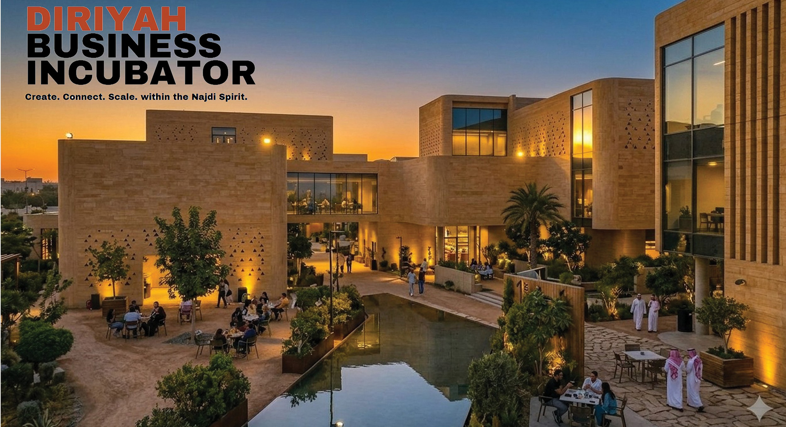
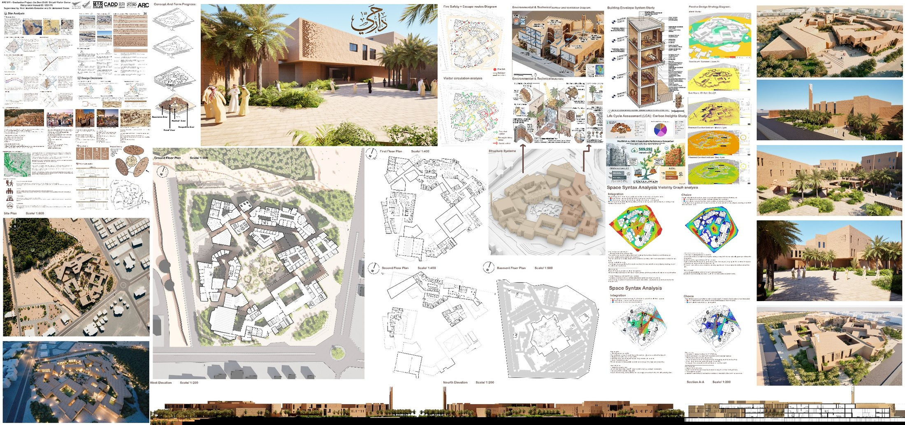
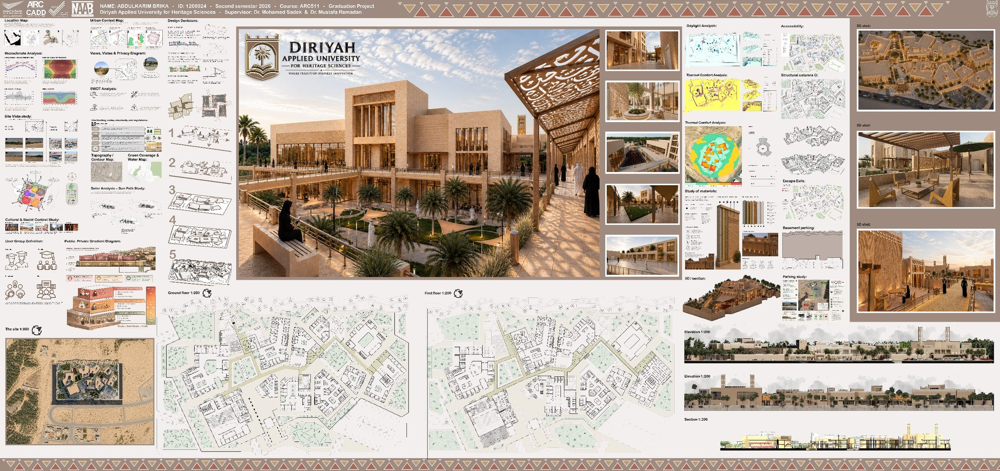
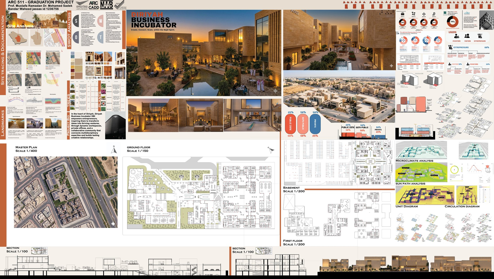
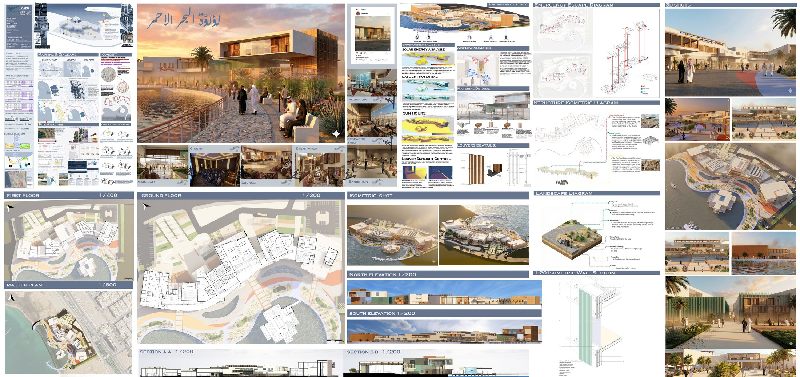
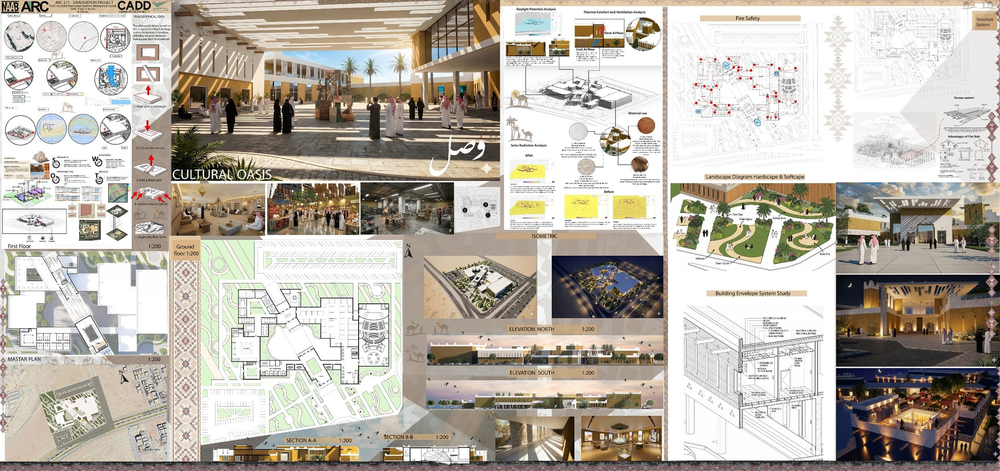
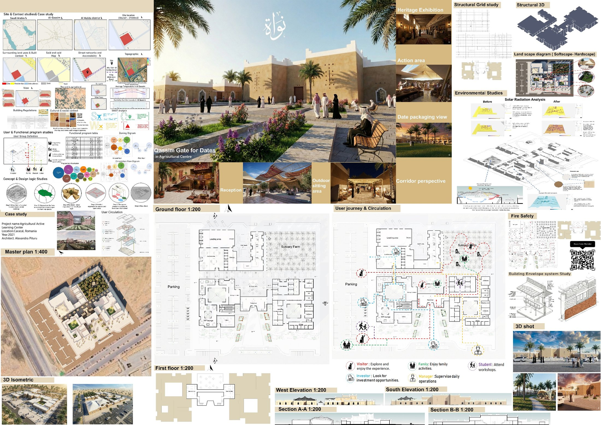

/ TEACHING — GRADUATION PROJECTS · DAR AL ULOOM UNIVERSITY
Graduation studio,
supervised at Dar Al Uloom University.
Six final-year architecture graduation projects developed at Dar Al Uloom University in Riyadh (ARC 511, Graduation Project), which I co-supervised with Prof. Mustafa Ramadan and Prof. Reeman Hussein. Each student carried an independent thesis from concept and site strategy through to resolved plan, section, structure and render — the work below is entirely their own. Every project is presented as its full presentation board, with the student’s own project film below it.

/ OVERVIEW
A studio, six theses.
Over their final year, six Dar Al Uloom University students each set their own brief and site — drawn largely from Diriyah, the wider Najdi region and the Saudi coast — then argued a complete architectural proposal in response. I co-supervised all six with Prof. Mustafa Ramadan and Prof. Reeman Hussein, guiding that arc: from first concept and site analysis through the resolution of plan, section, structure and environment, to the boards they defended at the end of the semester.
The six schemes are deliberately different in programme — a welcoming centre, a heritage university, a business incubator, a Red Sea visitor centre, a cultural oasis and a date-industry gate — but share a common commitment to climate-responsive design and to a contemporary reading of the region’s building tradition. Each is presented below as the student’s own board and film.
Student project — Mohamed Hamad
A low-rise welcoming centre for visitors to Diriyah, built in the Najdi mud-brick vernacular and gathered around shaded courtyards and date-palm gardens. The scheme is resolved as much through climate as through form: a passive design strategy, a detailed building-envelope study, a life-cycle carbon assessment and a space-syntax visibility analysis all shape how the plan is organised and how visitors move through it.
The presentation board — click to open it full size

Project film — Mohamed Hamad
Student project — AbdulKarim Birka
“Where tradition inspires innovation.” A campus dedicated to heritage sciences in Diriyah, set out as a series of arcaded courtyards and mud-brick masses behind mashrabiya-screened façades. Microclimate, sun-path, thermal-comfort and daylight studies drive the envelope and the choice of materials, while a clear structural grid and a public–private gradient order the teaching, research and gathering spaces.
The presentation board — click to open it full size

Project film — AbdulKarim Birka
Student project — Bander Al-Jasas
“Create. Connect. Scale — within the Najdi spirit.” An entrepreneurship incubator in the heart of Diriyah that turns ideas into ventures through flexible workspaces, private offices and shared social space, gathered around a reflecting water court. The plan is zoned across public, semi-public and private bands and tuned to its users — investors, visitors and entrepreneurs — with microclimate and sun-path analysis behind the massing.
The presentation board — click to open it full size

Project film — Bander Al-Jasas
Student project — Raed Al-Fakih
A fluid, shell-like visitor centre carried out over the water on the Red Sea at Jeddah, housing an aquarium, cinema, exhibition, research area, event hall and lounge under one curving roof. The organic form is backed by a full sustainability study — solar energy, airflow, daylight and louver sunlight control — together with a resolved structural isometric and a 1:20 wall section.
The presentation board — click to open it full size

Project film — Raed Al-Fakih
Student project — Mazen Al-Mutairi
Wasl — “connection” — is a cultural oasis laid out as a chain of Najdi courtyards and a covered souq, threaded with terraces and planted landscape. Thermal-comfort and ventilation, daylight, solar-radiation and materials studies drive the environmental design, while distinct terrace and structure systems and a hardscape–softscape landscape hold the composition together.
The presentation board — click to open it full size

Project film — Mazen Al-Mutairi
Student project — Hani Al-Harbi
Nawah — the “seed” of the date — is a date-industry and heritage complex in Al-Qassim (Al-Malida district): a gate for dates that brings a packaging hall, heritage exhibition, souq, workshops and an outdoor majlis together around courtyards. The plan is built from a mapped user journey for visitors, families, students, investors and managers, and is supported by structural-grid, environmental, solar-radiation, fire-safety and building-envelope studies.
The presentation board — click to open it full size

Project film — Hani Al-Harbi